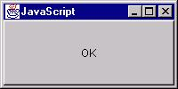

Norris Boyd
It's possible to use Rhino just for scripting Java. You don't have to
write any additional Java code; just use the existing Rhino shell and then
make calls into Java.
If you download the zip file for rhino, it will contain a single JAR file, js.jar. If you add the JAR file to your class path, you can start the Rhino shell using the command
java org.mozilla.javascript.tools.shell.Mainor if you have Java 2 (JDK 1.2 or greater), you can avoid changing your classpath and simply use the command
java -jar js.jarUnfortunately the -jar option to java will overwrite your existing classpath. The shell's interactive mode is a good way to begin exploring Rhino.
Note: Earlier versions of Rhino have two JAR files, js.jar and jstools.jar, and don't support the -jar option. Both JAR files must be added to the class path to start the shell.
You can execute a JavaScript file by putting the file name as an argument to the shell class:
java org.mozilla.javascript.tools.shell.Main myScript.jsThere are a number of options for evaluating scripts using the shell. See the command description for more information.

A Java frame created from the Rhino shell.
$ java org.mozilla.javascript.tools.shell.Main
js> importPackage(java.awt);
js> frame = new Frame("JavaScript")
java.awt.Frame[frame0,0,0,0x0,invalid,hidden,layout=java.awt.BorderLayout,resizable,title=JavaScript]
js> frame.show()
js> frame.setSize(new Dimension(200,100))
js> button = new Button("OK")
java.awt.Button[button0,0,0,0x0,invalid,label=OK]
js> frame.add(button)
java.awt.Button[button0,0,0,0x0,invalid,label=OK]
js> frame.show()
js> quit()
$
If you wish to load classes from JavaScript that aren't in the java
package, you'll need to prefix the package name with "Packages.".
For example:
$ java org.mozilla.javascript.tools.shell.Main js> cx = Packages.org.mozilla.javascript.Context.currentContext org.mozilla.javascript.Context@25980b44 js> cx.evaluateString(this, "3+2", null, 0, null) 5.0 js> quit() $
public class Me {
public int getAge() { return age; }
public void setAge(int anAge) { age = anAge;
}
public String getSex() { return "male"; }
private int age;
};
The two properties defined are age and sex. The sex property is read-only: it has no setter.
Using Rhino we can access the bean properties as if they where JavaScript properties. We can also continue to call the methods that define the property.
js> me = new Packages.Me();
Me@93
js> me.getSex()
male
js> me.sex
male
js> me.age = 33;
33
js> me.age
33
js> me.getAge()
33
js>
Since the sex property is read-only, we are not allowed to write to it.
Note: JavaBean reflection is not available in versions of Rhino before
1.5.
$ java org.mozilla.javascript.tools.shell.Main js> importClass(Packages.org.mozilla.javascript.Context) js> cx = Context.enter() org.mozilla.javascript.Context@25980d62 js> cx.evaluateString(this, "3+2", null, 0, null) 5.0 js> quit() $
$ java org.mozilla.javascript.tools.shell.Main
js> importPackage(java.awt);
js> frame = new Frame("JavaScript")
java.awt.Frame[frame0,0,0,0x0,invalid,hidden,layout=java.awt.BorderLayout,resizable,title=JavaScript]
js> button = new Button("OK")
java.awt.Button[button0,0,0,0x0,invalid,label=OK]
js> frame.setSize(new Dimension(200,100))
js> frame.add(button)
java.awt.Button[button0,0,0,0x0,invalid,label=OK]
js> frame.show()
js> function printDate() { print(new Date()) }
js> printDate()
Wed Mar 15 15:42:20 GMT-0800 (PST) 2000
js> o = { actionPerformed: printDate }
[object Object]
js> o.actionPerformed()
Wed Mar 15 15:42:39 GMT-0800 (PST) 2000
js> buttonListener = java.awt.event.ActionListener(o)
adapter0@6acc0f66
js> button.addActionListener(buttonListener)
js> Wed Mar 15 15:43:05 GMT-0800 (PST) 2000
Wed Mar 15 15:43:05 GMT-0800 (PST) 2000
Wed Mar 15 15:43:08 GMT-0800 (PST) 2000
quit()
$
When we type buttonListener = java.awt.event.ActionListener(o),
Rhino actually creates a new Java class that implements ActionListener
and forwards calls from that class to the JavaScript object. So when you
click on the button, the printDate method is called.
Starting from the release 1.5R5 Rhino allows to pass JavaScript functions directly to Java methods if the corresponding argument is Java interface and it either has the single method or all its methods has the same number of arguments and corresponding arguments has the same types. It allows to pass printDate directly to addActionListener and simplifies example:
$ java org.mozilla.javascript.tools.shell.Main
js> importPackage(java.awt);
js> frame = new Frame("JavaScript")
java.awt.Frame[frame0,0,0,0x0,invalid,hidden,layout=java.awt.BorderLayout,title=JavaScript,resizable,normal]
js> button = new Button("OK")
java.awt.Button[button0,0,0,0x0,invalid,label=OK]
js> frame.setSize(new Dimension(200,100))
js> frame.add(button)
java.awt.Button[button0,0,0,0x0,invalid,label=OK]
js> frame.show()
js> function printDate() { print(new Date()) }
js> printDate()
Mon Oct 27 2003 10:35:44 GMT+0100 (CET)
js> button.addActionListener(printDate)
js> Mon Oct 27 2003 10:36:09 GMT+0100 (CET)
Mon Oct 27 2003 10:36:10 GMT+0100 (CET)
quit()
$
Instead of writing
buttonListener = java.awt.event.ActionListener(o)above we can also write
buttonListener = new JavaAdapter(java.awt.event.ActionListener, o)which is equivalent. If we also wanted to extend class Foo, while also implementing java.lang.Runnable, we would write
buttonListener = new JavaAdapter(Packages.Foo, java.awt.event.ActionListener, java.lang.Runnable, o)In general the syntax is
new JavaAdapter(java-class, [java-class, ...] javascript-object)
where at most one java-class is a Java class and the remaining java-classes are interfaces. The result will be a Java adapter that extends any specified Java class, implements the Java interfaces, and forwards any calls to the methods of the javascript-object.